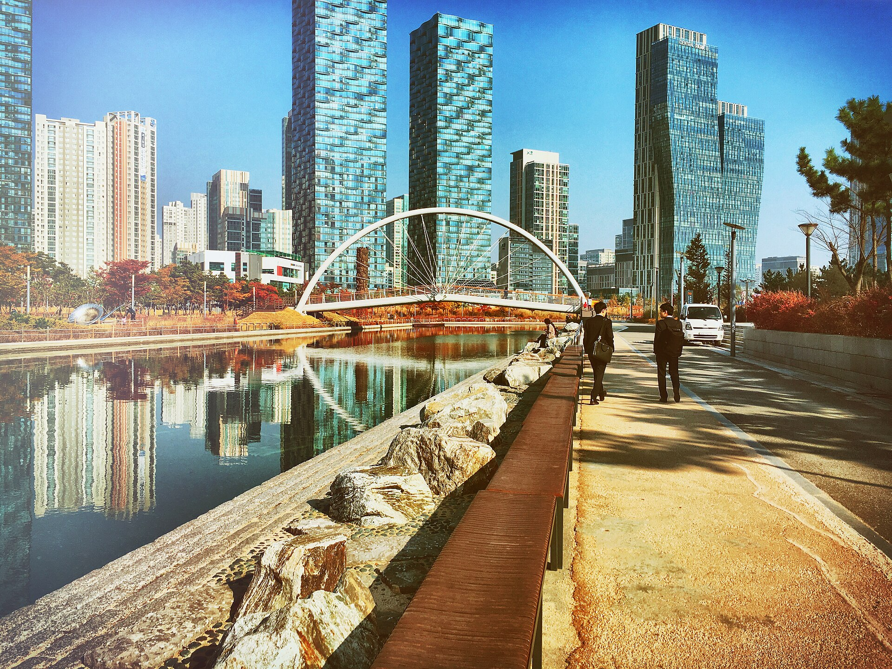

송도트램 사업비 68% 불어난 채…2027년 예타 재도전
정일영 의원 세 번째 공청회 「이제는 실행으로」, 인천시 재기획 용역 중
노선은 9% 늘었는데 사업비는 68% 늘어, 경제성이 관문
AI경제저널=김갑봉 기자 | 송도국제도시 안을 도는 트램을 언제 탈 수 있느냐를 두고 주민과 정치권, 인천시가 다시 머리를 맞댔다. 정일영 국회의원(더불어민주당, 인천 연수구을)은 4일 송도컨벤시아에서 송도트램 신속 추진 공청회를 열었다.
2025년 7월 공청회, 12월 토론회에 이은 세 번째 자리다. 사업비는 처음 계획보다 68% 불어났고, 인천시는 2027년 예비타당성조사에 다시 도전한다. 계획대로 가도 개통까지는 10년 안팎이 남는다.

공청회의 무게는 인천시가 진행 중인 재기획 용역 점검과 주민 의견 수렴에 있었다. 윤병조 국립인천대 도시공학과 교수가 도입 필요성을 발표했다. 장철배 인천시 교통국장은 재기획 용역의 진행 상황과 앞으로의 계획을 설명했다.
2023년 예타 대상 탈락…2027년 재신청 목표
송도트램은 송도의 주요 생활권을 잇고 인천도시철도 1호선, GTX-B와 연계하려는 사업이다. 정 의원실이 밝힌 기존 계획은 총연장 25.2㎞, 정거장 38곳, 사업비 약 7461억원이다.
정 의원실에 따르면 사업은 2023년 8월 예비타당성조사 대상사업에 뽑히지 못해 어려움을 겪었다. 인천시는 2026년 3월부터 재기획 용역을 하고 있다. 바뀐 도시개발 여건과 교통 수요를 반영하는 용역이다. 목표는 2027년 예비타당성조사 대상사업 재신청이다.
토론에는 정동재 인천연구원 교통물류연구위원, 장재민 단국대 도시부동산학부 겸임교수, 정채훈·조민경 인천시의원이 참여했다. 질의응답에서는 주민들이 교통 불편을 직접 털어놓는 시간이 이어졌다.
정 의원은 송도는 계속 커지는데 이를 받칠 내부 대중교통은 여전히 모자라다고 말했다. 그는 주민 의견이 사업계획과 후속 절차에 반영되도록 인천시 등과 협의하겠다고 했다. 계획에서 실행으로 나아가도록 끝까지 챙기겠다고도 밝혔다.
송도트램이 송도 주민과 인천에 말하는 것
첫째, 사업비의 덩치가 달라졌다. 인천시가 2022년 4월 사업화 용역을 시작하며 밝힌 계획은 총연장 23.06㎞, 정거장 30곳, 사업비 4429억원이다. 지금 계획과 견주면 사업비는 3032억원, 68.5% 많다(AI경제저널 계산).
둘째, 길이보다 돈이 훨씬 빨리 는다. 노선은 2.14㎞, 약 9% 길고 정거장은 8곳 많다. 1㎞당 사업비는 약 192억원에서 약 296억원이 된다(AI경제저널 계산). 예비타당성조사는 비용 대비 편익을 따진다. 재기획 용역이 이 비용을 어떻게 설명하느냐가 관문이다.
셋째, 개통은 아직 멀다. 인천시 설명으로는 도시철도 사업은 예비타당성조사부터 설계, 인가, 공사, 개통까지 약 10년 안팎이 걸린다. 2027년에 대상사업으로 뽑혀도 이 기간을 그대로 대입하면 개통은 2030년대 후반이다.
넷째, 주민이 기다린 시간도 길다. 2022년 사업화 용역 착수 때 인천시가 내건 목표는 그해 하반기 예비타당성조사 대상 선정이다. 2027년 재도전은 그 목표보다 5년 늦다. 세 차례 공청회와 토론회가 열린 까닭이 여기에 있다.
다섯째, 국비가 사업의 열쇠다. 2022년 계획에서는 사업비의 60%인 2657억원이 국비였다. 같은 비율이라면 늘어난 사업비만큼 국가 재정 부담도 커진다. 정부 심사를 넘으려면 송도 주민의 불편을 수요와 편익의 숫자로 증명해야 한다.
참고문헌
- 정일영 국회의원실(2026). 정일영 국회의원 「송도 트램, 이제는 실행으로」… 4일 공청회 개최(보도자료). 2026년 11월 4일.
- 인천광역시 철도과(2022). 인천시, 친환경 신교통 '송도트램' 도입 채비(보도자료). 2022년 4월 14일. https://www.incheon.go.kr/IC010205/view?repSeq=DOM_0000000004554434
- 인천광역시 시민소통담당관(2023). 인천시, 송도트램사업 조속 추진에 최선(보도자료). 2023년 4월 4일. https://www.incheon.go.kr/IC010205/view?repSeq=DOM_0000000007168539
[사진 출처]
- [사진1] Hon Kim(honn2), 「송도동, Incheon, South Korea (Unsplash).jpg」, 2015년 11월 5일, CC0, 위키미디어 공용. https://commons.wikimedia.org/wiki/File:%EC%86%A1%EB%8F%84%EB%8F%99,_Incheon,_South_Korea_(Unsplash).jpg
관련기사
- 청라 영상단지 준공 2031년으로 4년 늦춰…IFEZ, 콘텐츠·바이오로 판 짠다
- 서해구, 해사국제상사법원 본청사 유치 요청…2028년 3월 개원까지 16개월
- 인천시 "국비 1306억 더"…노동감독관 인건비·인천e음·M버스
저작권자 © AI경제저널 무단전재 및 재배포, AI학습 및 활용 금지